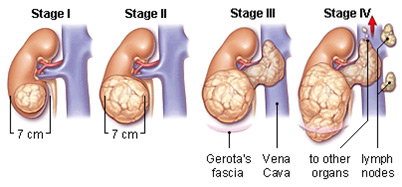

In many cases, people may have no early symptoms of kidney cancer. As the tumor grows larger, symptoms may appear. You may have one or more of these kidney cancer symptoms:
1.Blood in your urine 2.A lump in your side or abdomen 3.A loss of appetite 4.A pain in your side that doesn't go away 5.Weight loss that occurs for no known reason 6.Fever that lasts for weeks and isn't caused by a cold or other infection 7.Extreme fatigue 8.Anemia 9.Swelling in your ankles or legs
Kidney cancer that spreads to other parts of your body may cause other symptoms, such as: Shortness of breath,Coughing up blood,Bone pain.